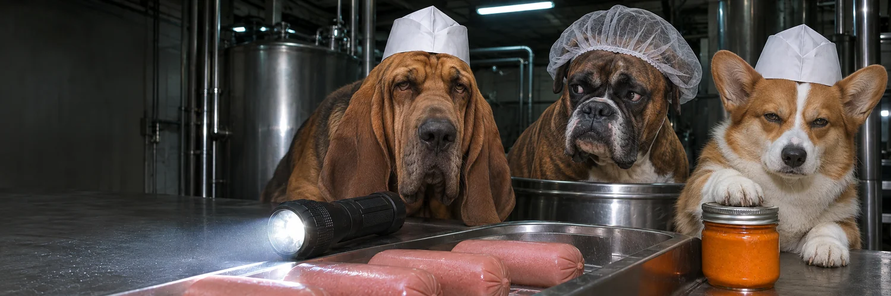
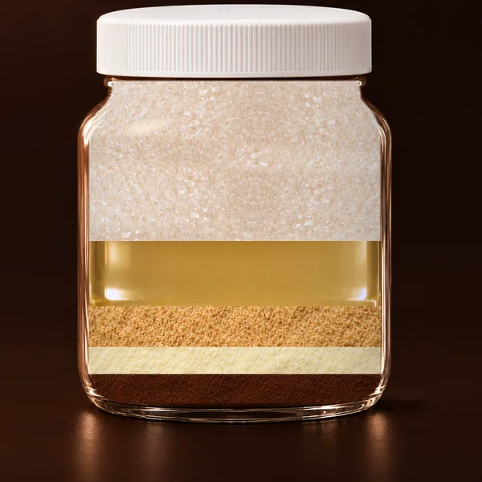
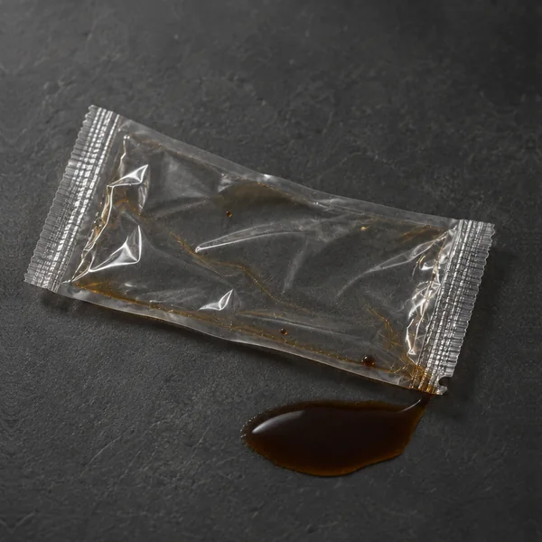
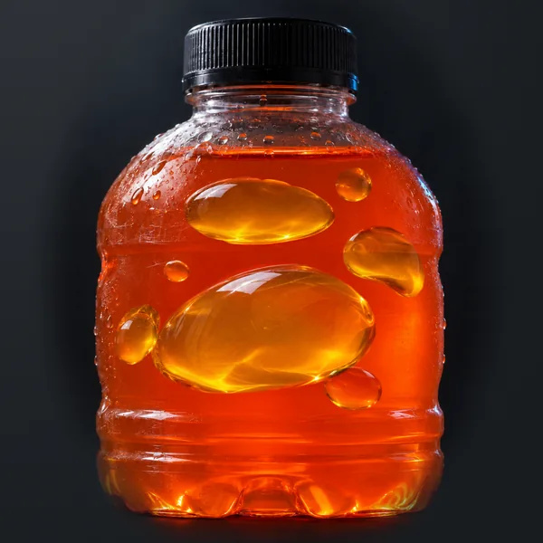
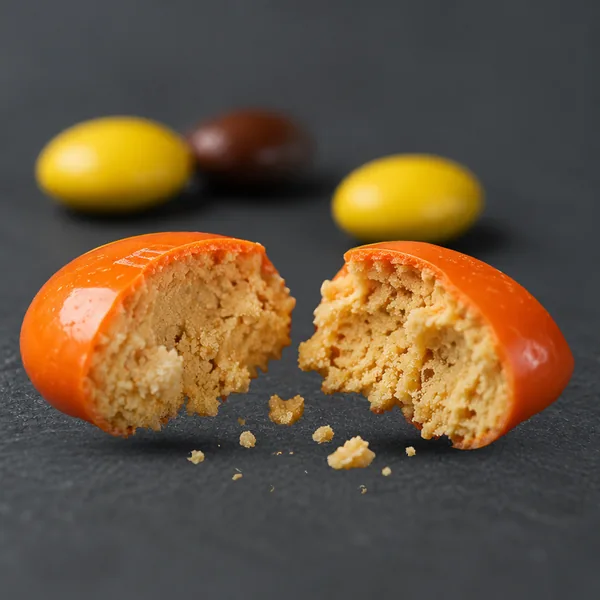
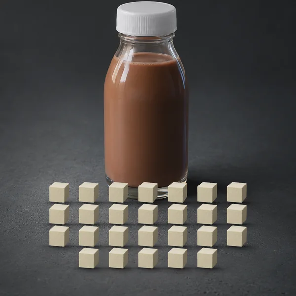
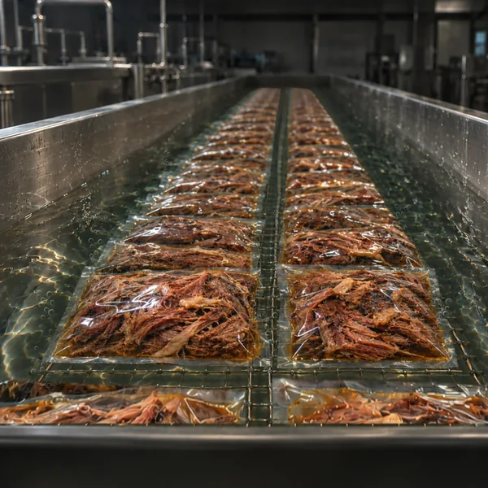

VOL. 001

PAPER HATS. SERIOUS QUESTIONS.
How your favorite
"foods" are made
in America.
Every post here starts as a text post by The Food Manufacturing Guy, @TipOfTheBanana, turned into a short video. The post's own words are the narration.
01 / THE CASE FILES06 STORIES
Start with the first line.

FILE 001 / NUTELLA
Nutella is 13% hazelnuts.View story

FILE 002 / SOY SAUCE
The soy sauce packet in your takeout bag isn't soy sauce.View story

FILE 003 / GATORADE
Gatorade used to have brominated vegetable oil in it, BVO, which is patented as a flame retardant and was banned in Europe and Japan.View story

FILE 004 / REESE'S PIECES
Reese's Pieces have no chocolate in them.View story

FILE 005 / FAIRLIFE
Fairlife chocolate protein shake has one main ingredient.View story

FILE 006 / CHIPOTLE
Chipotle's barbacoa and carnitas have never been cooked in the restaurant.View story
02 / JOIN INOPEN FILE
Bring the next story.
Read the Wall. Share a post you want turned into a video, or make one yourself.
Community repository